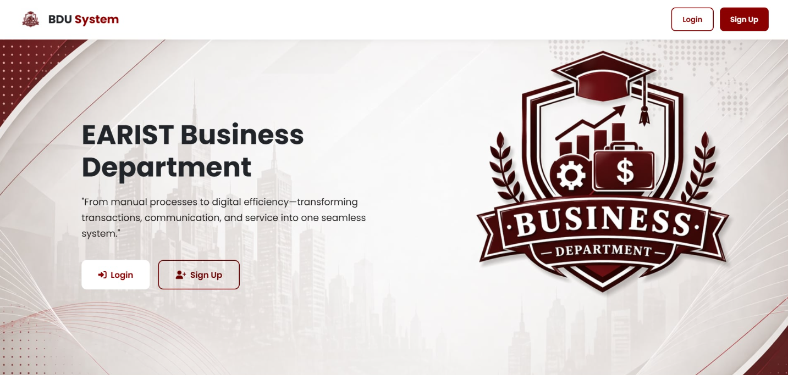

Web-Based Point-of-Sale and Business Management System

The Point-of-Sale System for the Business Development Unit is a web-based system designed to help manage products, sales, and business transactions. The system provides a centralized way of organizing and managing information related to business operations.
The system was developed to make sales and product management more organized and efficient. It helps users manage product information and record business transactions through a computerized system.
I worked on the development of our thesis paper, including writing and organizing the documentation, conducting research, preparing the required chapters, and revising the paper based on our system and research findings.
Through this ongoing thesis project, I have learned how to analyze requirements, plan a system, work with my team, and apply my technical knowledge to develop a practical IT-based solution. I also learned the importance of problem-solving, communication, research, and continuous improvement throughout the development process.